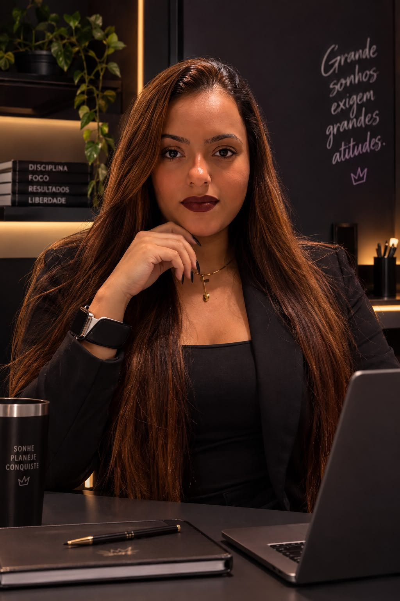
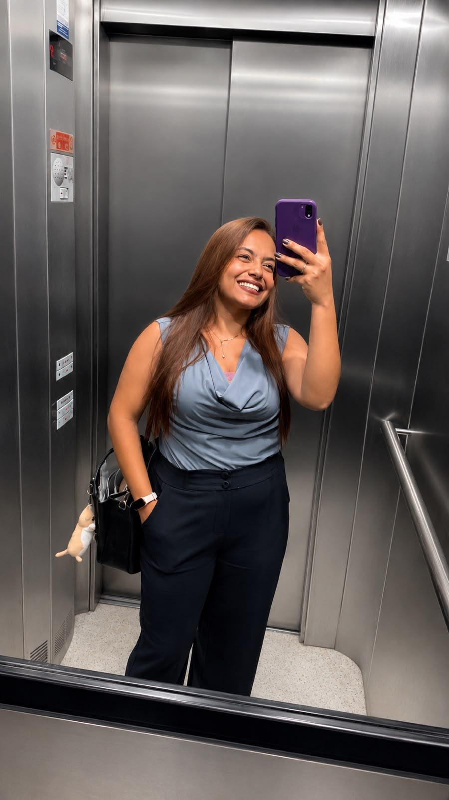
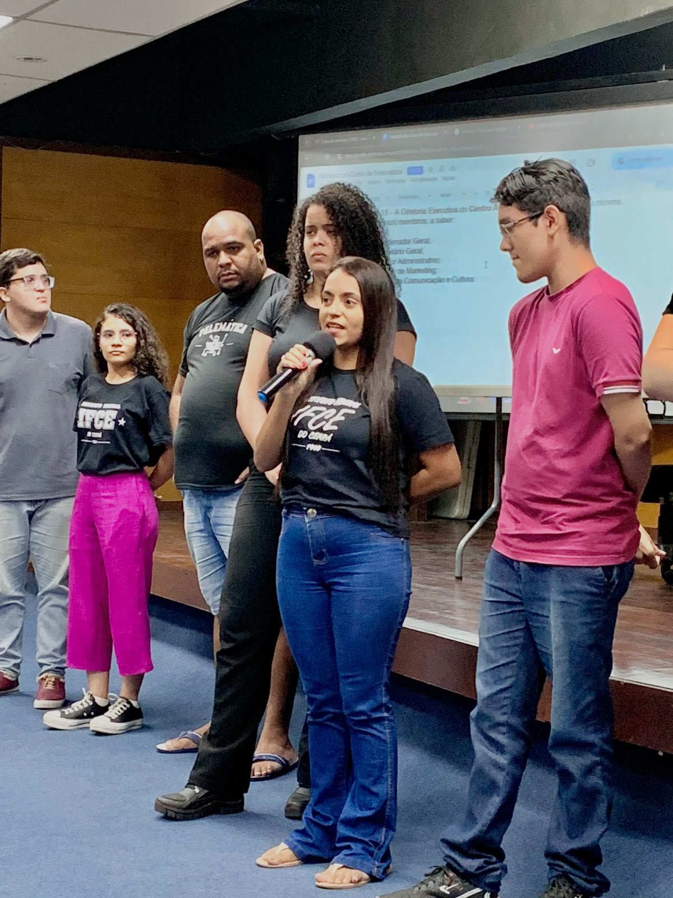

🎤
Apresentação
Atuação como apresentadora, condução de dinâmicas, chamadas e conteúdos para eventos.
Onde existe uma ideia, eu encontro uma forma de comunicar, criar e fazer acontecer.

Comunicação que conecta. Presença que comunica.
Sou estudante de Telemática e tenho facilidade natural com comunicação, criação de vídeos e produção de conteúdo.
Tenho desenvoltura para falar em público, diante das câmeras e ao microfone, sempre buscando transmitir as informações de forma clara, espontânea e envolvente.
Ao longo da minha trajetória acadêmica, já criei e organizei eventos dentro da universidade, incluindo um evento voltado para a comunidade nerd, no qual produzi chamadas em vídeo e atuei como apresentadora de uma dinâmica de quiz. Também participei da organização de um evento de Jiu-Jitsu, desenvolvendo ainda mais minha experiência com público, organização e comunicação.
Tenho facilidade para lidar com câmeras, gosto de estar em frente às lentes e não tenho vergonha de me comunicar com diferentes públicos. Minha espontaneidade, criatividade e facilidade de interação são características que considero grandes diferenciais para atuar como apresentadora, criadora de conteúdo, repórter ou influenciadora.
Acredito que uma boa apresentadora não apenas fala: ela conecta, envolve e transmite a mensagem de forma que o público queira continuar ouvindo. É justamente esse tipo de comunicação que quero desenvolver e levar para cada projeto.
Uma seleção organizada para mostrar versatilidade, presença diante das câmeras e capacidade de conversar com diferentes públicos.
Atuação como apresentadora, condução de dinâmicas, chamadas e conteúdos para eventos.
Chamadas, cobertura e conteúdos pensados para aproximar o público do evento.
Vídeos curtos e comunicação com linguagem natural para redes sociais.
Conversa, improviso e interação com convidados, participantes e público.
Interesse e experiência com projetos ligados à comunidade nerd, entretenimento e eventos.
Espaço para novos trabalhos, experiências e colaborações.
Quero unir comunicação, cultura pop e espontaneidade para criar experiências que façam o público se sentir parte do evento.
Os espaços abaixo estão prontos para receber seus vídeos. Substitua os cartões pelos links do YouTube, Instagram, TikTok ou arquivos que quiser apresentar.
Presença profissional, espontaneidade e diferentes momentos diante das câmeras.



Se você está procurando uma pessoa para apresentar, entrevistar, cobrir ou criar conteúdo, entre em contato.
Apresentadora • Criadora de conteúdo • Comunicação
Disponível para oportunidades, projetos, apresentações, eventos, entrevistas e criação de conteúdo.